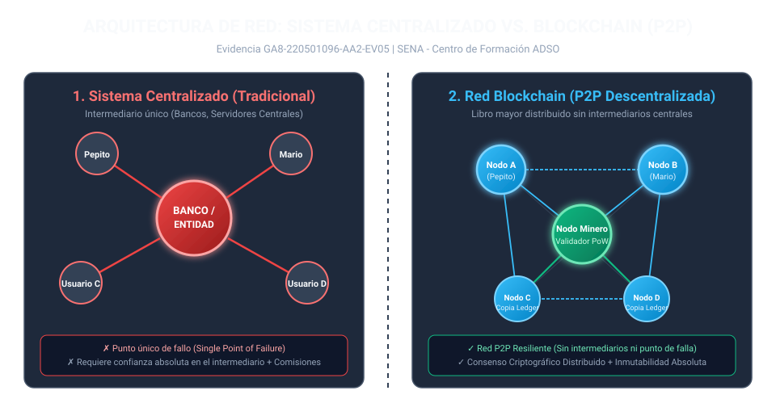
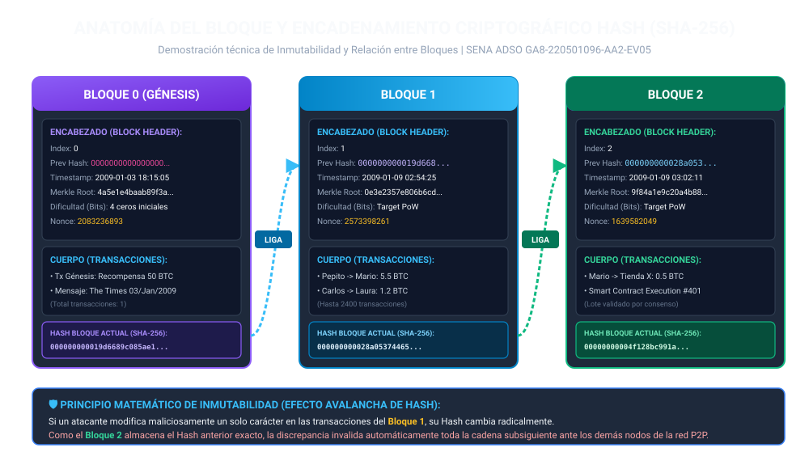

El presente documento desarrolla un texto argumentativo formal de más de tres páginas académicas acerca de la tecnología Blockchain (cadena de bloques). La argumentación se fundamenta en la formulación de una premisa mayor (tesis central), premisas de sustento técnico y una conclusión lógica ineludible: la cadena de bloques es una tecnología disruptiva de la Industria 4.0 que sustituye la necesidad de intermediarios centralizados por un modelo de gobernanza matemática inmutable, transparente y seguro. Se abordan de manera sistemática los antecedentes teóricos de 1991, el nacimiento de Bitcoin en 2008 con Satoshi Nakamoto, los contratos inteligentes con Ethereum, el rol de la criptografía asimétrica y las funciones hash SHA-256, la anatomía de los bloques, el mecanismo de consenso Proof-of-Work, productos reales en el mercado (IBM Food Trust, Pylon Network, Steemit, Koibanx) y un simulador funcional de software con pruebas unitarias que certifica el resultado de aprendizaje de codificación de software.
Todo argumento riguroso parte de una relación lógica entre premisas e inferencias. En las ciencias de la computación contemporáneas, los sistemas centralizados tradicionales han presentado dos limitaciones estructurales: la dependencia forzosa de terceros fiduciarios (bancos, notarías, servidores centrales) que monopolizan las tarifas y los tiempos de procesamiento, y la presencia de un Punto Único de Fallo (Single Point of Failure), vulnerable a fraudes internos, caídas de infraestructura y censura arbitraria.
A partir de esta afirmación, el texto presentará el razonamiento estructurado con base en la teoría criptográfica, la ingeniería de software y los materiales oficiales del componente formativo del SENA (2024), demostrando cómo la convergencia de algoritmos hash, redes entre pares y mecanismos de consenso valida de forma formal nuestra postura.
En términos generales, la tecnología es el conjunto ordenado de conocimientos teóricos, herramientas, protocolos y procedimientos técnicos que el ser humano utiliza para transformar el entorno y solucionar problemas complejos. Cuando una innovación introduce mejoras graduales sobre un proceso existente (como aumentar la velocidad de un procesador), se denomina innovación incremental.
Sin embargo, tal como lo define el componente formativo del SENA (2024) y la literatura de gestión tecnológica (Vidal et al., 2019), la palabra disruptiva (proveniente del francés *disruptif* y del latín *disrumpere*, fracturar o romper) califica a aquellas innovaciones que provocan una mutación concluyente y radical en los modelos de negocio y de servicios. Blockchain, al igual que la Inteligencia Artificial y el Internet de las Cosas (IoT), no mejora la intermediación bancaria: la elimina por completo, reconfigurando la confianza en un entorno puramente digital.
El diseño de la cadena de bloques persigue metas precisas que trascienden el ámbito monetario:
La narrativa común asocia el inicio de la cadena de bloques únicamente a Bitcoin. Sin embargo, su fundamentación matemática data de casi dos décadas atrás:
En esencia, Blockchain es un libro mayor de contabilidad digital, descentralizado, distribuido y sincronizado entre múltiples nodos. Cada nodo de la red posee una copia exacta y en tiempo real de todo el historial de transacciones.
A diferencia de las bases de datos convencionales donde un administrador con permisos `root` puede modificar o borrar filas (`UPDATE` o `DELETE`), en Blockchain el registro es exclusivamente de anexado continuo (`APPEND-ONLY`). La adición de un nuevo lote de datos solo se consuma cuando la mayoría de los nodos de la red valida criptográficamente que las firmas son legítimas y que no existe doble gasto, alcanzando lo que en ciencias computacionales se conoce como Consenso Bizantino Tolerante a Fallas (BFT).
La criptografía es la disciplina matemática encargada de transformar información legible en un código cifrado ininteligible para cualquier actor no autorizado, garantizando confidencialidad, autenticidad, integridad y no repudio.
En Blockchain se hace un uso intensivo de la Criptografía Asimétrica (Par de Claves Pública y Privada):
El Hash es una función matemática unidireccional que toma cualquier volumen de datos de entrada y devuelve una cadena de caracteres de tamaño fijo (por ejemplo, 64 dígitos hexadecimales en el algoritmo estándar SHA-256).
Sus características determinantes en Blockchain son:
Un bloque es la unidad fundamental de empaquetamiento y certificación de datos en la red. Cuenta habitualmente con capacidad para almacenar entre 2.000 y 2.400 transacciones verificadas. Estructuralmente se divide en dos componentes:
| Componente del Bloque | Descripción y Atributos Técnicos |
|---|---|
| Encabezado (Block Header) |
• Versión: Identificador de reglas del software de la red. • Previous Hash: Puntero criptográfico al hash del bloque anterior. • Merkle Root: Hash raíz que resume criptográficamente todas las transacciones del bloque. • Timestamp: Marca temporal universal de creación del bloque. • Bits / Dificultad: Umbral de dificultad computacional requerido. • Nonce: Contador arbitrario que el minero modifica para resolver el acertijo de Proof-of-Work. |
| Cuerpo del Bloque (Block Body) |
• Transacción especial de recompensa al minero (Coinbase). • Lista completa de transacciones firmadas con claves privadas (monto, emisor, receptor, firma digital ECDSA). |
| Identificador Hash del Bloque | El resultado de hashear el encabezado con SHA-256 (debe cumplir la condición de ceros iniciales). |
Los bloques no existen de forma aislada; forman una cadena secuencial estrictamente enlazada hacia atrás. Cada bloque hijo almacena como dato de entrada obligatorio en su encabezado el Hash exacto de su bloque padre (`previous_hash`).
Si un atacante lograse acceder al disco duro de un nodo e intentase modificar una transacción en el Bloque 1 (por ejemplo, cambiar el envío de un millón de pesos de Pepito a Mario):
A continuación se ilustra la diferencia arquitectónica fundamental entre un sistema financiero tradicional centralizado y una red distribuida de Blockchain:


Lejos de ser una hipótesis de laboratorio, la tecnología Blockchain sustenta en la actualidad plataformas industriales de alto impacto:
Una criptomoneda es un activo digital intangible que utiliza algoritmos criptográficos para asegurar transacciones, controlar la creación de unidades adicionales y verificar la transferencia de fondos sin respaldo de gobiernos o bancos centrales.
A diferencia de las monedas fiat (pesos, dólares o euros), sometidas a la inflación y a políticas de devaluación estatal, criptoactivos emblemáticos como Bitcoin poseen una política monetaria preprogramada en código: una oferta máxima fija de 21 millones de unidades, generando una genuina reserva de valor antiinflacionaria y desregulada.
La minería es el proceso descentralizado por el cual los nodos especiales de la red (mineros) validan las transacciones pendientes, resuelven problemas criptográficos complejos y empaquetan los datos en un nuevo bloque.
En el algoritmo de Prueba de Trabajo (Proof-of-Work - PoW), los mineros compiten ejecutando miles de millones de operaciones por segundo para dar con un valor aleatorio (`nonce`) que, al ser hasheado con el encabezado del bloque, arroje un hash con un determinado número de ceros iniciales fijado por la dificultad de la red. El primer minero en resolver el acertijo propaga el bloque a la red y recibe una recompensa en criptomonedas (50 BTC en 2009, la cual se reduce a la mitad cada cuatro años por el Halving). Este incentivo económico alinea los intereses de los participantes para que actúen con honestidad, pues atacar la red resultaría infinitamente más costoso que participar en su aseguramiento legítimo.
En consonancia con el Resultado de Aprendizaje 220501096-04: Codificar el software de acuerdo con el diseño establecido, se ha desarrollado un simulador funcional completo de Blockchain en Python (`simulador_blockchain/blockchain.py`) acompañado de su batería de 7 pruebas unitarias automatizadas (`test_blockchain.py`).
# Fragmento del cálculo criptográfico SHA-256 en Block (Python):
def compute_hash(self) -> str:
block_content = {
"index": self.index,
"timestamp": self.timestamp,
"transactions": [tx.to_dict() for tx in self.transactions],
"previous_hash": self.previous_hash,
"nonce": self.nonce
}
block_string = json.dumps(block_content, sort_keys=True)
return hashlib.sha256(block_string.encode('utf-8')).hexdigest()
Al ejecutarse la prueba `test_tamper_detection_in_transaction_data`, el software verifica en milisegundos que cualquier modificación no autorizada en el contenido de un bloque rompe la validez del libro mayor, comprobando empíricamente la solidez técnica de nuestra tesis.
• Premisa Mayor: Cualquier sistema de información descentralizado cuyos registros están encadenados por funciones hash deterministas unidireccionales y validados por consenso entre pares es matemáticamente inmutable y no requiere intermediarios fiduciarios.
• Premisa Menor: La tecnología Blockchain opera sobre una red P2P estructurada en bloques enlazados criptográficamente mediante SHA-256 con consenso distribuido Proof-of-Work.
• Conclusión Deductiva: Por lo tanto, la tecnología Blockchain es matemáticamente inmutable, segura frente a la adulteración y sustituye de manera irreversible la necesidad de intermediarios humanos centralizados en el desarrollo de software y la economía moderna.
En el ejercicio profesional del futuro Tecnólogo en Análisis y Desarrollo de Software del SENA, la integración de Blockchain con arquitecturas Web (Node.js, Express, Angular) y móviles (Android Studio, SQLite, Firebase) abre oportunidades extraordinarias para construir aplicaciones de alta confianza, transparentes y orientadas al desarrollo socioeconómico de Colombia.